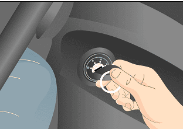
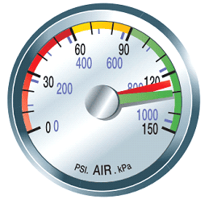
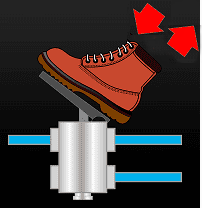
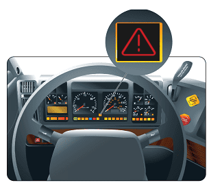

Low air warning- Testing Procedure
- 1. Enter cab
"The wheels are chocked, both parking brakes are applied, My truck & trailer secure"
- 2. Start the engine
"My current pressure is ___psi "
  - 3. Reduce the Air Pressure (Pump brake pedal to reduce pressure)
"I will reduce the air pressure, until the low air warning activates"
 - 4. When Low air activates
"The Low air warning activates at 60psi, which is better than 55psi."
 - 5. Read Minor & Major Defects
To see video of Low-Air Warning Inspection:Press Here!.